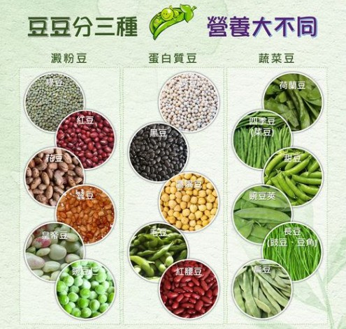

澱粉類的豆子是飯飯豆、蛋白質類的豆子是肉肉豆、蔬菜類是菜菜豆
這是答案, 請問如何設計題目或教案?
1. 豆類營養教案
題目：未定
預備：將豆類做成圖片小卡（數個），紙盤3個（分別標示肉肉豆、菜菜豆、飯飯豆）
操作：
1、請長者放到正確分類
2、講者介紹並放到正確盤子
3、請長者再重排一次，確認學習正確
2. 請問你最喜歡吃甚麼豆子, 請問是哪一類?
簡單的幸福(click to listen)
教案
主題：幸福(或滿足, 或陪伴)
引起動機：簡單的幸福(詩歌)
提問設計1：你認為幸福是什麼? (討論幸福)
提問設計2：你認為滿足是什麼? (討論滿足)
提問設計3：生命中有孤單經驗? 誰陪伴你渡過?(討論陪伴，留住期使用)
認知學習：歌曲作者講述的幸福內容, 與你認為的幸福有何不同? 你也想要這種幸福嗎?